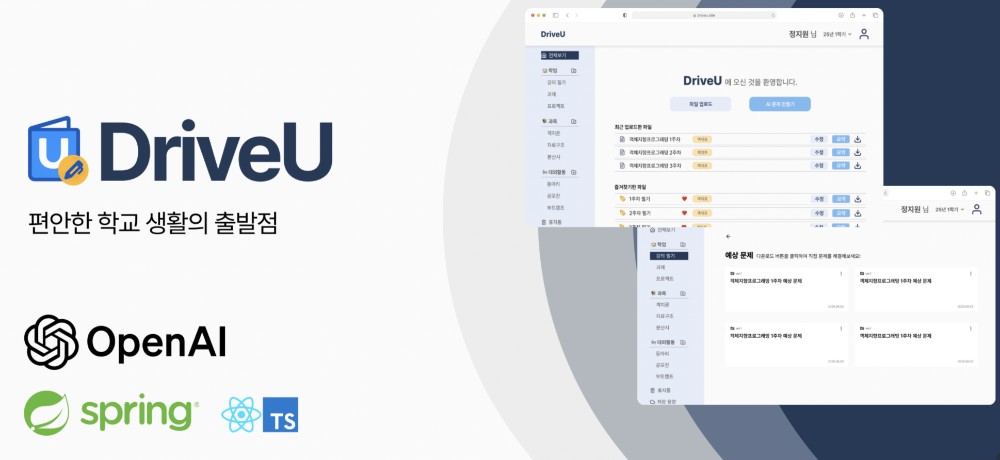
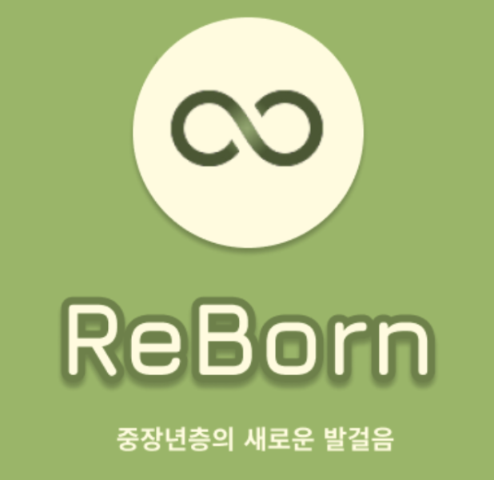

PROJECTS
2025.03 ~ 2025.12
DriveU: 학부생을 위한 클라우드 아카이빙 서비스
My Work
- 대용량 파일 처리 시스템 설계
- 계층적 디렉토리 관리 기능 구현
- OAuth2 기반 로그인 및 사용자 인증 구현
- 안정적인 클라우드 인프라 구축 및 CI/CD 자동화
Spring
JPA
MySQL
AWS EC2
AWS S3
GPT API
2025.06 ~ 2025.08
Block Guard: 피싱 예방 서비스

My Work
- 사기분석, 긴급대응 기능 API 설계 및 서버 로직 구현
- AI 모델 연동 및 성능 최적화
- 프롬프트 엔지니어링을 통한 응답 정확도 향상
- KUIT 5기 데모데이 최우수상 수상
Spring
FastAPI
JPA
MySQL
AWS EC2
AWS S3
GPT API
2024.09 ~ 2025.01
Reborn: 중장년층을 위한 구직 정보 제공 커뮤니티
My Work
- JPA 기반 해시태그 관리 기능 설계 및 구현
- 협업 및 커뮤니케이션 중심 역할 수행
- 2024-2학기 교내 Learning & Sharing 활동의 장려상 수상
Spring
JPA
MySQL
AWS EC2